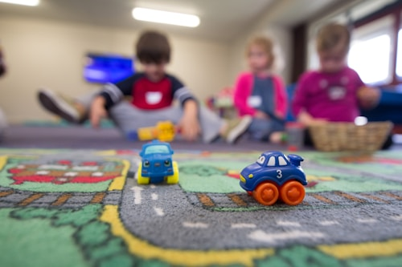
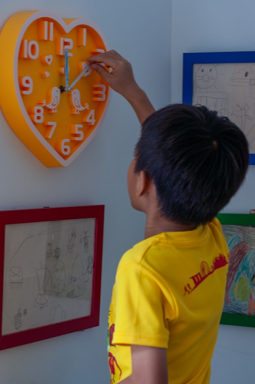
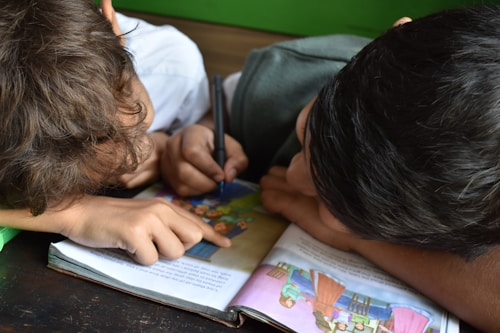
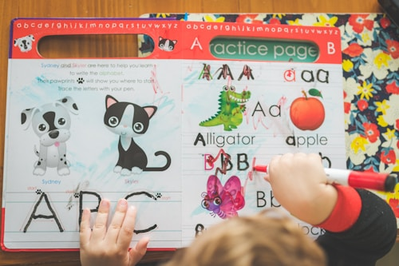
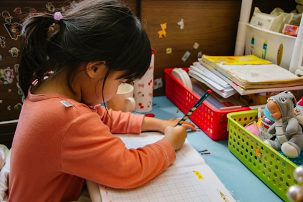

뉴스

2026.08.13 · 방학 영어캠프 · 영어 몰입 환경
방학 특강 영어캠프 — 국내에서 즐기는 영어 몰입 환경
해외 캠프 없이도 방학 동안 매일 영어에 몰입하는 환경을 만드는 국내 방학 특강 프로그램을 소개합니다.
→ 자세히 읽기
2026.08.13 · 영어 원서 읽기 · 리딩 레벨업
영어 원서 읽기 — 리딩 레벨 어떻게 올릴까요
어휘력과 독해력을 함께 키우는 영어 원서 읽기, 레벨에 맞는 책 고르는 법부터 실전 팁까지 정리했습니다.
→ 자세히 읽기
2026.08.13 · 화상영어 · 온라인·오프라인 비교
화상 영어 vs 오프라인 영어 — 우리 아이에게 맞는 방식 고르기
화상 영어와 오프라인 수업의 장단점을 비교하고, 아이 성향에 맞는 방식을 고르는 기준을 정리했습니다.
→ 자세히 읽기
2026.08.13 · 프리토킹 · 스피킹 학습법
영어 스피킹 프리토킹 — 왜 매일 조금씩이 효과적인가
몰아서 하는 공부보다 매일 짧게 반복하는 프리토킹이 스피킹 실력에 더 효과적인 이유를 정리했습니다.
→ 자세히 읽기
2026.08.13 · 파닉스 · 초등 저학년 영어 시작
초등 영어 파닉스 — 알파벳부터 시작하는 아이 영어
알파벳 소리부터 차근차근, 아이 영어의 첫 단추가 되는 파닉스 학습법을 정리했습니다.
→ 자세히 읽기

2026.08.12 · 토익 · 취업준비 영어회화
토익 900점은 있는데 왜 말이 안 나올까요?
토익 고득점과 실전 회화는 다른 능력입니다. 직장인·취업준비생을 위한 실전 영어회화 준비법을 정리했습니다.
→ 자세히 읽기

2026.08.12 · 오픽 · 취업·이직 준비
오픽 IH, 목표 등급까지 이렇게 준비하세요
암기한 답변만으로는 한계가 있는 오픽, 취업·이직 준비생을 위한 등급별 준비 전략을 소개합니다.
→ 자세히 읽기

2026.08.12 · 토플 · 성인 유학·이민 준비
직장인·성인 유학 준비, 토플 스피킹까지 챙겨야 하는 이유
점수만으로는 부족한 성인 유학 준비, 토플 스피킹과 생활영어를 함께 준비하는 법을 소개합니다.
→ 자세히 읽기

2026.08.12 · 일본어·제2외국어 · 주부 대상
제2외국어, 시작하기 좋은 나이는 없습니다
육아 후 자신을 위한 시간을 찾는 주부님들을 위한 일본어·제2외국어 회화 도전기를 소개합니다.
→ 자세히 읽기

2026.08.12 · 영어회화 · 성인·주부·시니어 취미
은퇴 후, 육아 후 시작하는 영어회화 — 취미로도 충분합니다
시험이나 취업이 목적이 아니어도 괜찮은, 성인·주부·시니어를 위한 부담 없는 취미형 영어회화를 소개합니다.
→ 자세히 읽기

2026.08.11 · 리터니 영어유지
리터니 영어유지, 귀국 후 가장 빨리 무너지는 것부터 지키세요
귀국 후 가장 먼저 무너지는 영역과 리터니 영어유지의 현실적인 방법을 정리했습니다.
→ 자세히 읽기

2026.08.11 · 취업 준비생 영어
취업 준비생 영어, 스펙보다 실전 말하기가 관건입니다
토익 점수와 실전 면접 대응력이 왜 다른지, 취업 준비생에게 필요한 영어를 정리했습니다.
→ 자세히 읽기

2026.08.11 · 영어회화 온라인 수업
영어회화 온라인 수업, 대면 수업과 뭐가 다를까요?
온라인 영어회화 수업의 실제 장점과 진행 방식, 궁금해하시는 점을 정리했습니다.
→ 자세히 읽기

2026.08.11 · 대학생 영어
대학생 영어, 목적부터 명확히 정하고 시작하세요
교환학생·토익·취업 등 목적별로 달라지는 대학생 영어 준비 전략을 정리했습니다.
→ 자세히 읽기

2026.08.11 · 토익·토플 영어공부
토익·토플 영어공부, 점수대별로 전략이 달라야 합니다
토익과 토플의 차이부터 점수대별 준비 전략까지 정리했습니다.
→ 자세히 읽기

2026.08.11 · 취업영어공부
취업영어공부, 시험 점수만으로는 부족합니다
직무별 영어 면접 준비 로드맵과 실무 영어까지 함께 정리했습니다.
→ 자세히 읽기
2026.08.05
직장인 토익과외, 왜 일대일이어야 할까요?
퇴근 후 학원 다닐 시간이 없는 직장인들이 일대일과외를 선택하는 이유와 목표 점수별 준비 전략을 정리했습니다.
→ 자세히 읽기
2026.08.04
아이엘츠 스피킹, 유학 준비라면 꼭 챙겨야 할 것
해외대학 진학과 어학연수를 앞둔 학생들이 아이엘츠 스피킹에서 자주 놓치는 부분을 정리했습니다.
→ 자세히 읽기
2026.08.03
7세 리터니부터 중학생 리터니까지, 나이별로 다른 영어 관리법
영국계·미국계 국제학교 재학생을 포함해, 연령대별로 완전히 다른 리터니 영어 관리 방법을 소개합니다.
→ 자세히 읽기
2026.08.02
국제학교 수학 시간에 자꾸 틀리는 이유 — 수학용어를 몰라서입니다
개념은 아는데 영어로 된 math 문제만 보면 틀리는 학생들을 위한 수학용어 정리법을 소개합니다.
→ 자세히 읽기
2026.08.01
주재원 자녀·해외거주학생, 방학 영어관리는 이렇게 다릅니다
일시 귀국한 주재원 자녀와 해외거주학생을 위한 방학 기간 영어 관리 방법을 정리했습니다.
→ 자세히 읽기
2026.07.27
잠실 리터니 영어, 실력은 있는데 왜 위축될까요?
영어 실력은 충분한데 한국 학교에서 말을 아끼게 되는 리터니 학생들의 심리와 자신감 회복법을 소개합니다.
→ 자세히 읽기
2026.07.26
동탄 토플 스피킹, 왜 유독 어려울까요?
리딩·리스닝은 높은데 스피킹만 낮은 학생들을 위한 구조화된 토플 스피킹 훈련법을 정리했습니다.
→ 자세히 읽기
2026.07.25
파주 온라인 영어회화, 환경 세팅이 절반입니다
온라인 수업 효과를 좌우하는 환경·준비물 체크리스트를 정리했습니다.
→ 자세히 읽기
2026.07.24
여의도 학부모가 헷갈리는 리터니 유지반 vs 일반 학습반
목적에 따라 완전히 다른 두 커리큘럼, 우리 아이에게 맞는 반을 고르는 기준을 소개합니다.
→ 자세히 읽기

2026.07.23
청담 보딩스쿨 인터뷰 영어, 일반 면접과 다릅니다
보딩스쿨 인터뷰 특유의 화법과 청담 지역 학생들이 준비해야 할 포인트를 정리했습니다.
→ 자세히 읽기
2026.07.23
부천 영어 발표(Presentation), 스피킹과는 또 다른 훈련입니다
영어는 잘하는데 발표만 유독 긴장하는 학생들을 위한 프레젠테이션 훈련법을 정리했습니다.
→ 자세히 읽기
2026.07.22
마포 리터니 학생, 영어보다 어려운 건 학교 적응입니다
영어 실력과 별개로 새로운 학교 문화에 적응하는 과정을 돕는 영어회화 수업을 소개합니다.
→ 자세히 읽기
2026.07.21
인천 논현, 온라인 1:1과 그룹 수업 중 뭐가 맞을까요?
목적에 따라 달라지는 1:1 수업과 그룹 수업의 장단점을 비교했습니다.
→ 자세히 읽기

2026.07.20
일산 리터니 영어, 재입학 인터뷰는 이렇게 준비하세요
귀국 후 국제학교·특목중 재입학 인터뷰를 앞둔 리터니 학생들을 위한 실전 준비법을 정리했습니다.
→ 자세히 읽기

2026.07.20
수지 유학준비생이 놓치기 쉬운 생활영어 표현들
시험 영어만으로는 부족한, 출국 전 꼭 익혀야 할 생활 표현을 정리했습니다.
→ 자세히 읽기
2026.07.19
광교 유학준비, 에세이와 스피킹을 함께 준비해야 하는 이유
글쓰기에만 집중하다 놓치기 쉬운 스피킹 준비, 에세이와 병행하는 방법을 소개합니다.
→ 자세히 읽기
2026.07.19
세종 초등 저학년 리터니, 영어 실력이 가장 빨리 사라집니다
어릴수록 빠르게 잊는 리터니 영어, 저학년 실력 유지를 위한 현실적인 방법을 소개합니다.
→ 자세히 읽기

2026.07.18
제주 국제학교 학생, 방과후 영어회화가 필요한 이유
학업 영어는 탄탄한데 일상 대화가 약한 제주 국제학교 학생들을 위한 프리토킹 수업을 소개합니다.
→ 자세히 읽기
2026.07.17
서초 학생의 온라인 영어회화 3개월, 실제 변화 사례
리터니 중학생이 온라인 프리토킹을 3개월간 진행하며 어떻게 달라졌는지 실제 사례로 소개합니다.
→ 자세히 읽기
2026.07.16
목동 리터니 영어, 귀국 후 실력을 지키는 법
해외 생활 후 한국에 돌아온 리터니 학생들이 영어 실력을 유지하기 위해 무엇을 해야 하는지 정리했습니다.
→ 자세히 읽기
2026.07.16
위례 학부모님이 묻는, 영어회화는 몇 살부터 시작할까요?
초등 저학년 영어 스피킹, 시작 시기 판단 기준과 저학년 수업에서 중요한 것을 정리했습니다.
→ 자세히 읽기
2026.07.15
판교 유학준비생을 위한 영어 스피킹 트레이닝
시험 점수만으로는 부족한 유학 준비, 실전 스피킹을 언제 어떻게 준비해야 하는지 소개합니다.
→ 자세히 읽기
2026.07.14
해운대 지역 온라인 영어회화, 오프라인과 뭐가 다를까?
부산 해운대 학부모님들이 자주 묻는 온라인 영어회화와 오프라인 수업의 실제 차이를 정리했습니다.
→ 자세히 읽기
2026.07.13
용인 학생들의 영어 스피킹, 왜 입이 안 떨어질까?
문법과 어휘는 아는데 말이 안 나오는 학생들을 위한 현실적인 스피킹 훈련법을 소개합니다.
→ 자세히 읽기
2026.07.12
대치동 학부모가 알려주는 1:1 영어회화 선생님 고르는 법
원어민 선생님과 유학파 한국인 선생님, 우리 아이에게는 어떤 선생님이 맞을지 체크리스트로 정리했습니다.
→ 자세히 읽기